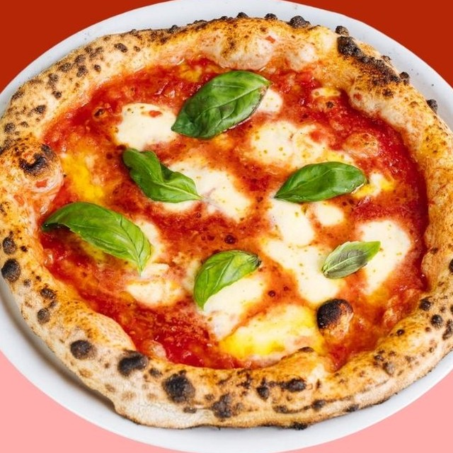
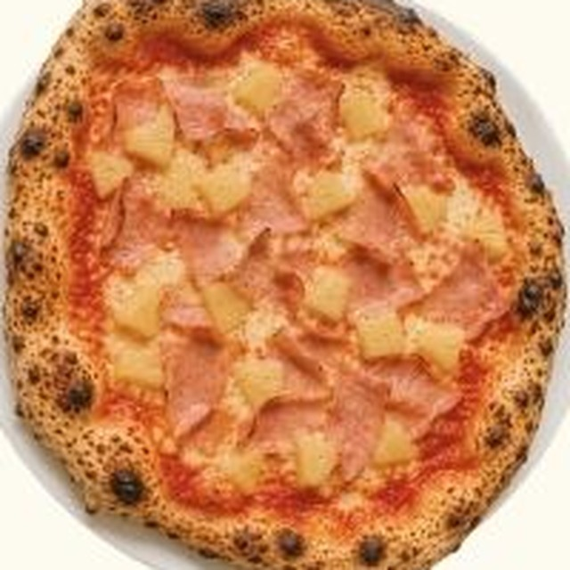
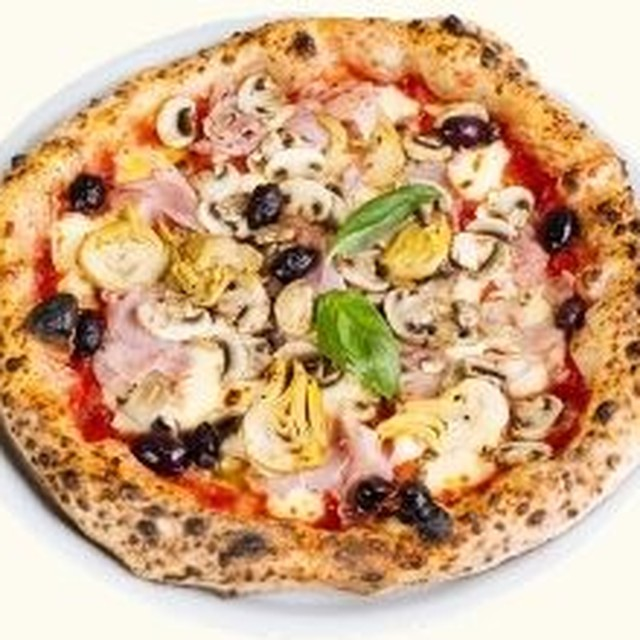
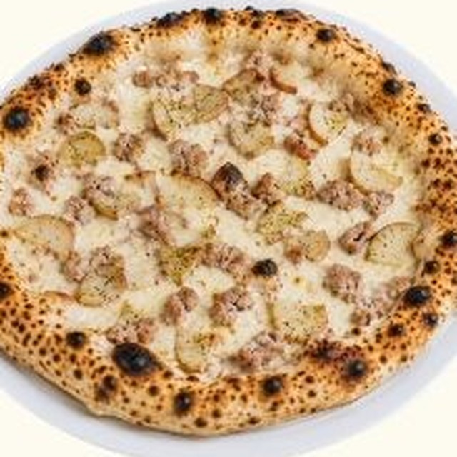
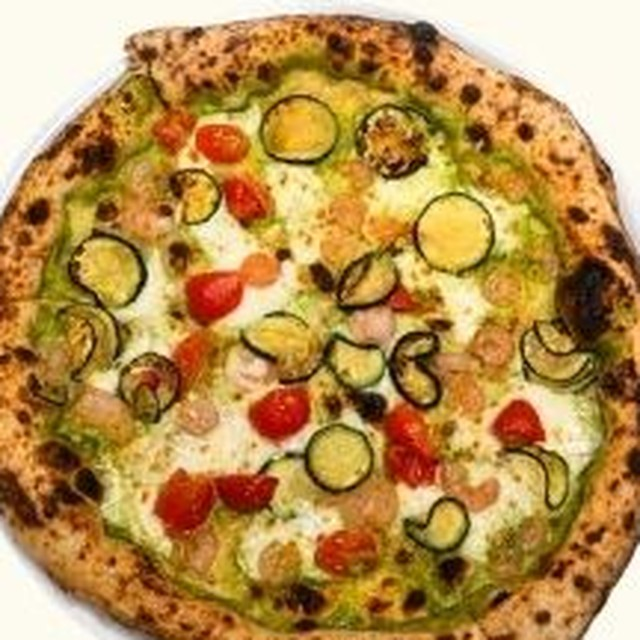

Pizza Napoletana
At the heart of every pizza is Samuele’s passion: the dough. Combining elements of traditional Napoletana and contemporanea pizza-making, he continually experiments with flour, fermentation and hydration to create his perfect dough.Curious? Ask Samuele what flour and hydration he’s using today.
1
Pick your base
Every pizza comes on either baseSamuele’s dough
Our classic base, made by Samuele with traditional Napoletana and contemporanea techniques.
Gluten-free base
Made in-house by Samuele, who holds a Coeliac Australia certificate. Cooked in the same oven as our regular bases, so we can’t guarantee no cross-contact.
2
Pick your pizza
Rossa

Marinara
$17.50 V · Ve
San Marzano tomato, oregano & garlic oil
Same pizza, level it up

Margherita
$22.50 V
San Marzano tomato, Napoli-cut fior di latte, fresh basil & EVOO

Bufalina
$28.50 V
+ buffalo mozzarella

Prosciutto
$30.50
+ buffalo mozzarella & prosciutto

Hawaiian
$26.50
San Marzano tomato, mozzarella, smoked ham, pineapple & EVOO

Diavola
$28.50
San Marzano tomato, mozzarella, spicy salame, olives, basil & EVOO

Capricciosa
$30.50
San Marzano tomato, mozzarella, ham, artichoke, olives, mushroom & EVOO

La Porcona
$30.50
Mozzarella, pork sausage, ham & spicy salame
Rossa (tomato base) or Bianca (white base)
Bianca

Cheesy Garlic
$16.50 V
Mozzarella, herbs & garlic oil

Napoletana
$26.50
Mozzarella, olives, anchovies, herbs & garlic oil

Vegetarian
$27.50 V
Zucchini cream base with seasonal vegetables & EVOO

Salsiccia & Patate
$28.50
Mozzarella cream base, Napoli-cut fior di latte, herb-roasted potato & pork sausage
Add mushrooms or capsicum +$1

Gamberi
$30.50
Zucchini cream base, cherry tomatoes, prawns, spicy ’nduja & stracciatella
Real dough.
Real passion.
Real pizza.
Real passion.
Real pizza.
Rossa or bianca?
Rossa pizzas start with San Marzano tomato. Bianca pizzas have a white base, like mozzarella or zucchini cream.
Vegan? Just ask
Ask our team and we’ll make it happen.
V vegetarian · Ve vegan